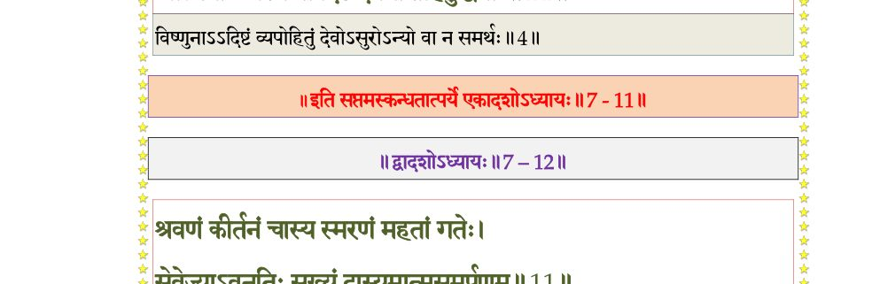
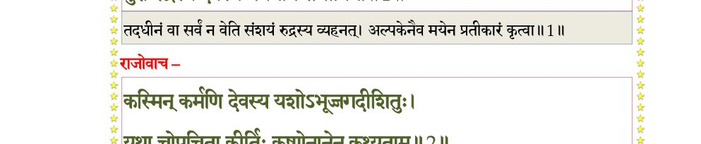
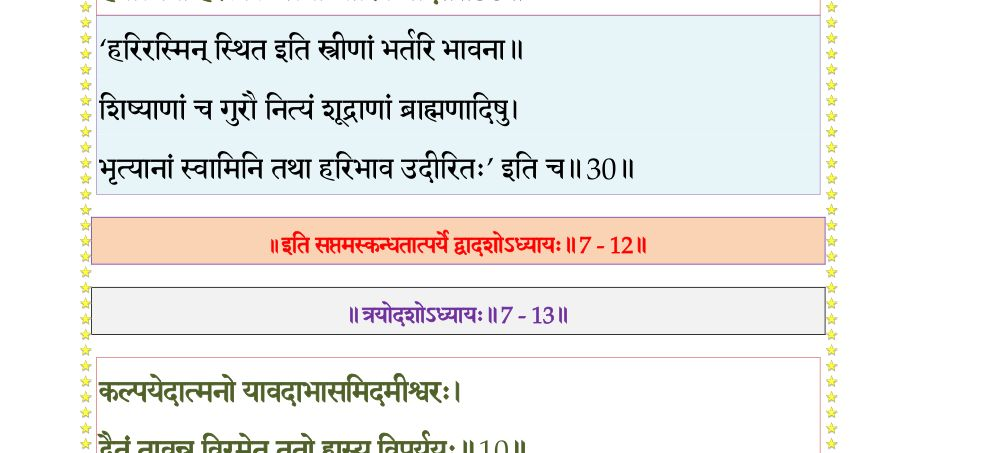
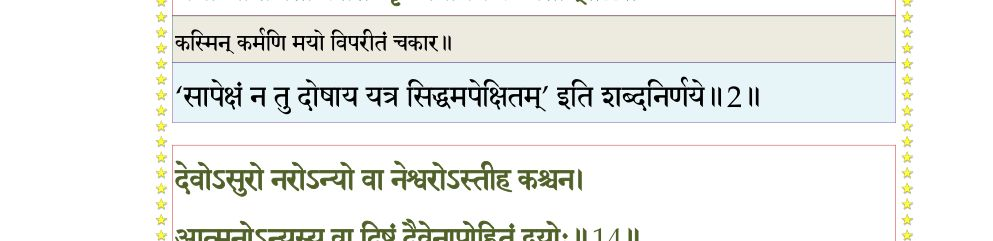

स्कन्ध 7 · अध्याय 11
श्लोक १
श्रीशुक उवाच–
श्रुत्वेहितं साधुसभासभाजितं महत्तमाग्रण्य उरुक्रमात्मनः ।
युधिष्ठिरो दैत्यपतेर्मुदान्वितः पप्रच्छ भूयस्तनयं स्वयम्भुवः ।। १ ।।
श्रुत्वेहितं साधुसभासभाजितं महत्तमाग्रण्य उरुक्रमात्मनः ।
युधिष्ठिरो दैत्यपतेर्मुदान्वितः पप्रच्छ भूयस्तनयं स्वयम्भुवः ।। १ ।।
श्लोक २
युधिष्ठिर उवाच–
भगवन् श्रोतुमिच्छामि नृणां धर्मं सनातनम् ।
वर्णाश्रमाचारयुतं यत् पुमान् विन्दते परम्।। २ ।।
भगवन् श्रोतुमिच्छामि नृणां धर्मं सनातनम् ।
वर्णाश्रमाचारयुतं यत् पुमान् विन्दते परम्।। २ ।।
श्लोक ३
भवान् प्रजापतेः साक्षादात्मजः परमेष्ठिनः ।
सुतानां सम्मतो ब्रह्मन् तपोज्ञानसमाधिभिः।। ३ ।।
सुतानां सम्मतो ब्रह्मन् तपोज्ञानसमाधिभिः।। ३ ।।
श्लोक ४
नारायणपरा विप्रा धर्मं गुह्यं यथा विदुः ।
करुणाः साधवः शान्तास्त्वद्विधा न तथा परे।। ४ ।।
करुणाः साधवः शान्तास्त्वद्विधा न तथा परे।। ४ ।।
श्लोक ५
नारद उवाच–
नत्वा भगवतेऽजाय लोकानां धर्महेतवे ।
वक्ष्ये सनातनं धर्मं नारायणमुखाच्छ्रुतम्।। ५ ।।
नत्वा भगवतेऽजाय लोकानां धर्महेतवे ।
वक्ष्ये सनातनं धर्मं नारायणमुखाच्छ्रुतम्।। ५ ।।
श्लोक ६
योऽवतीर्यात्मनोंऽशे दाक्षायण्यां तु धर्मतः ।
लोकानां स्वस्तयेऽध्यास्ते तपो बदरिकाश्रमे।। ६ ।।
लोकानां स्वस्तयेऽध्यास्ते तपो बदरिकाश्रमे।। ६ ।।
श्लोक ७
धर्ममूलं हि भगवान् सर्ववेदमयो हरिः ।
स्मृतिश्च तद्विदां राजन् येन चात्मा प्रसीदति।। ७ ।।
स्मृतिश्च तद्विदां राजन् येन चात्मा प्रसीदति।। ७ ।।
श्लोक ८
सत्यं दया तपः शौचं तितिक्षेक्षा शमो दमः ।
अहिंसा ब्रह्मचर्यं च त्यागः स्वाध्याय आर्जवम्।। ८ ।।
अहिंसा ब्रह्मचर्यं च त्यागः स्वाध्याय आर्जवम्।। ८ ।।
श्लोक ९
सन्तोषः समदृक्सेवा ग्राम्येहोपरमः शनैः ।
नृणां विपर्ययेहेक्षा मौनमात्मविमर्शनम्।। ९ ।।
नृणां विपर्ययेहेक्षा मौनमात्मविमर्शनम्।। ९ ।।
श्लोक १०
अन्नाद्यादेः संविभागो भूतेभ्यश्च यथाऽर्हतः ।
तेष्वात्मदेवताबुद्धिः सुतरां नृषु पाण्डव।। १० ।।
तेष्वात्मदेवताबुद्धिः सुतरां नृषु पाण्डव।। १० ।।
श्लोक ११
श्रवणं कीर्तनं चास्य स्मरणं महतां गतेः ।
सेवेज्याऽवनतिः सख्यं दास्यमात्मसमर्पणम्।। ११ ।।
सेवेज्याऽवनतिः सख्यं दास्यमात्मसमर्पणम्।। ११ ।।
श्लोक १२
नृणामयं परो धर्मः सर्वेषां समुदाहृतः ।
त्रिंशल्लक्षणसंयुक्तः सर्वात्मा येन तुष्यति।। १२ ।।
त्रिंशल्लक्षणसंयुक्तः सर्वात्मा येन तुष्यति।। १२ ।।
श्लोक १३
संस्कारा यद्यविच्छिन्ना स द्विजो वैदिकादयः ।
इज्याध्ययनदानानि विहितानि द्विजन्मनाम्।। १३ ।।
इज्याध्ययनदानानि विहितानि द्विजन्मनाम्।। १३ ।।
श्लोक १४
जन्मकर्मावदातानां क्रियाश्च निगमोदिताः ।
विप्रस्याध्यापनादीनि ततोऽन्यस्यापरिग्रहः।। १४ ।।
विप्रस्याध्यापनादीनि ततोऽन्यस्यापरिग्रहः।। १४ ।।
भागवततात्पर्यनिर्णय

श्लोक १५
राज्ञो वृत्तिः प्रजागोप्तुरविप्राद् वा करादिभिः ।
वैश्यस्तु वार्तावृत्तिः स्यान्नित्यं ब्रह्मकुलानुगः।। १५ ।।
वैश्यस्तु वार्तावृत्तिः स्यान्नित्यं ब्रह्मकुलानुगः।। १५ ।।
श्लोक १६
शूद्रस्य द्विजशुश्रूषा वृत्तिश्च स्वामिनो भवेत्।। १६ ।।
भागवततात्पर्यनिर्णय

श्लोक १७
वार्ता विचित्रशालीनं यायावर्यं शिलोञ्छनम् ।
विप्रवृत्तिश्चतुर्धेयं श्रेयसी चोत्तरोत्तरा ।
जघन्यो नोत्तमां वृत्तिमनापदि भजेन्नरः।। १७ ।।
विप्रवृत्तिश्चतुर्धेयं श्रेयसी चोत्तरोत्तरा ।
जघन्यो नोत्तमां वृत्तिमनापदि भजेन्नरः।। १७ ।।
श्लोक १८
ऋते राजन्यमापत्सु सर्वेषामपि सर्वशः ।
ऋतामृताभ्यां जीवेत मृतेन प्रमृतेन वा।। १८ ।।
ऋतामृताभ्यां जीवेत मृतेन प्रमृतेन वा।। १८ ।।
श्लोक १९
सत्यानृताभ्यां जीवेत न श्ववृत्त्या कथञ्चन ।
ऋतमुञ्छशिलं प्रोक्तममृतं यदयाचितम्।। १९ ।।
ऋतमुञ्छशिलं प्रोक्तममृतं यदयाचितम्।। १९ ।।
श्लोक २०
मृतं तु नित्ययाञ्चा स्यात् प्रमृतं कर्षणं स्मृतम् ।
सत्यानृतं तु वाणिज्यं श्ववृत्तिर्नीचसेवनम्।। २० ।।
सत्यानृतं तु वाणिज्यं श्ववृत्तिर्नीचसेवनम्।। २० ।।
श्लोक २१
वर्जयेत् तां सदा विप्रो राजन्यश्च जुगुप्सिताम् ।
सर्ववेदमयो विप्रः सर्वदेवमयो नृपः।। २१ ।।
सर्ववेदमयो विप्रः सर्वदेवमयो नृपः।। २१ ।।
श्लोक २२
शमो दमस्तपः शौचं सन्तोषः क्षान्तिरार्जवम् ।
दानं दयाऽच्युतात्मत्वं सत्यं च ब्रह्मलक्षणम्।। २२ ।।
दानं दयाऽच्युतात्मत्वं सत्यं च ब्रह्मलक्षणम्।। २२ ।।
श्लोक २३
शौर्यं वीर्यं धृतिस्तेजस्त्याग आत्मजयः क्षमा ।
ब्रह्मण्यता प्रसादश्च रक्षा च क्षत्रलक्षणम्।। २३ ।।
ब्रह्मण्यता प्रसादश्च रक्षा च क्षत्रलक्षणम्।। २३ ।।
श्लोक २४
देवगुर्वार्यगोभक्तिस्त्रिवर्गपरितोषणम् ।
आस्तिक्यमुद्यमो नित्यं नैपुण्यं वैश्यलक्षणम्।। २४ ।।
आस्तिक्यमुद्यमो नित्यं नैपुण्यं वैश्यलक्षणम्।। २४ ।।
श्लोक २५
शूद्रस्य सन्नतिः शौचं सेवा स्वामिन्यमायया ।
अमन्त्रयज्ञो ह्यस्तेयं मौढ्यं गोविप्ररक्षणम्।। २५ ।।
अमन्त्रयज्ञो ह्यस्तेयं मौढ्यं गोविप्ररक्षणम्।। २५ ।।
श्लोक २६
स्त्रीणां तु पतिदेवानां तच्छुश्रूषाऽनुकूलता ।
तद्बन्धुष्वनुवृत्तिश्च नित्यं तद्व्रतधारणम्।। २६ ।।
तद्बन्धुष्वनुवृत्तिश्च नित्यं तद्व्रतधारणम्।। २६ ।।
श्लोक २७
सम्मार्जनोपलेपाभ्यां गृहमण्डनवर्तनैः ।
स्वयं च मण्डिता नित्यं परिमृष्टपरिच्छदा।। २७ ।।
स्वयं च मण्डिता नित्यं परिमृष्टपरिच्छदा।। २७ ।।
श्लोक २८
कामैरुच्चावचैः साध्वी प्रश्रयेण दमेन च ।
वाक्यैः सत्यैः प्रियैः प्रेम्णा काले काले भजेत् पतिम्।। २८ ।।
वाक्यैः सत्यैः प्रियैः प्रेम्णा काले काले भजेत् पतिम्।। २८ ।।
श्लोक २९
सन्तुष्टाऽलोलुपा दक्षा धर्मज्ञा प्रियसत्यवाक् ।
अप्रमत्ता शुचिः स्निग्धा पतिं त्वपतितं भजेत्।। २९ ।।
अप्रमत्ता शुचिः स्निग्धा पतिं त्वपतितं भजेत्।। २९ ।।
श्लोक ३०
या पतिं हरिभावेन भजेच्छ्रीरिव तत्परा ।
हर्यात्मना हरेर्लोके पत्या श्रीरिव मोदते।। ३० ।।
हर्यात्मना हरेर्लोके पत्या श्रीरिव मोदते।। ३० ।।
भागवततात्पर्यनिर्णय

श्लोक ३१
वृत्तिः सङ्करजातीनां तत्तत्कुलकृता भवेत् ।
अचोराणामपापानामन्त्यजान्तेऽवसायिनाम्।। ३१ ।।
अचोराणामपापानामन्त्यजान्तेऽवसायिनाम्।। ३१ ।।
श्लोक ३२
प्रायः स्वभावविहितो नृणां धर्मो युगे युगे ।
वेददृग्भिः स्मृतो राजन् प्रेत्य चेह च शर्मकृत्।। ३२ ।।
वेददृग्भिः स्मृतो राजन् प्रेत्य चेह च शर्मकृत्।। ३२ ।।
श्लोक ३३
वृत्त्या स्वभावकृतया वर्तमानः स्वकर्मणि ।
हित्वा स्वभावजं कर्म शनैर्निर्गुणतामियात्।। ३३ ।।
हित्वा स्वभावजं कर्म शनैर्निर्गुणतामियात्।। ३३ ।।
श्लोक ३४
उप्यमानं मुहुः क्षेत्रं स्वयं निर्वीर्यतामियात् ।
न कल्पते पुनः सूत्यै उप्तं बीजं च नश्यति।। ३४ ।।
न कल्पते पुनः सूत्यै उप्तं बीजं च नश्यति।। ३४ ।।
भागवततात्पर्यनिर्णय

श्लोक ३५
एवं कामाशयं चित्तं कामानामतिसेवया ।
विरज्येत यथा राजन्नाग्निवत् कामबिन्दुभिः।। ३५ ।।
विरज्येत यथा राजन्नाग्निवत् कामबिन्दुभिः।। ३५ ।।
श्लोक ३६
यस्य यल्लक्षणं प्रोक्तं पुंसो वर्णादिव्यञ्जकम् ।
यद्यन्यत्रापि दृश्येत तत् तेनैव विनिर्दिशेत्।। ३६ ।।
यद्यन्यत्रापि दृश्येत तत् तेनैव विनिर्दिशेत्।। ३६ ।।
।। इति श्रीमद्भागवते सप्तमस्कन्धे एकादशोऽध्यायः ।।